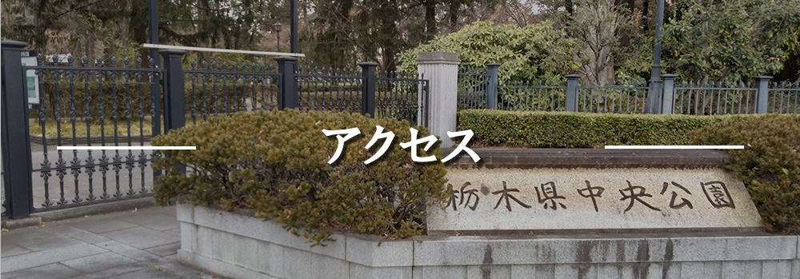

アクセス/交通案内
⋯⋯⋯⋯⋯⋯ 住所 ⋯⋯⋯⋯⋯⋯
〒320-0865 栃木県宇都宮市睦町2-50
⋯⋯⋯⋯⋯⋯⋯⋯ 電話番号 ⋯⋯⋯⋯⋯⋯⋯
028-636-1491
⋯⋯⋯⋯⋯⋯⋯ 営業時間 ⋯⋯⋯⋯⋯⋯⋯
日曜日 5時30分～18時00分
月曜日 5時30分～18時00分
火曜日 5時30分～18時00分
水曜日 5時30分～18時00分
木曜日 5時30分～18時00分
金曜日 5時30分～18時00分
土曜日 5時30分～18時00分
⋯⋯⋯⋯⋯⋯⋯⋯ 駐車場 ⋯⋯⋯⋯⋯⋯⋯⋯
大型10台、普通163台
⋯⋯⋯⋯⋯ 最寄り駅・バス停 ⋯⋯⋯⋯⋯
バス：JR宇都宮線西口から約15～20分、または東武宇都宮駅からバスにて「中央公園・博物館前」下車。
徒歩：東武宇都宮駅より徒歩約25～26分。
車：東北自動車道「鹿沼IC」から約15分（約7㎞）、「宇都宮IC」から約13~15分。
｟徒歩でのアクセス｠
①東武宇都宮駅西口を出て左方向へ進む
②2つ目の交差点を右に曲がる
③いちょう通りをまっすぐ進む
④須賀学園教育会館を通過する
⑤左手に栃木県中央公園が見える
バリアフリー設備
障がい者用P〇
車椅子貸出〇
車椅子対応スロープ〇
車椅子対応トイレ〇
盲導犬の受け入れ〇
オムツ交換台〇